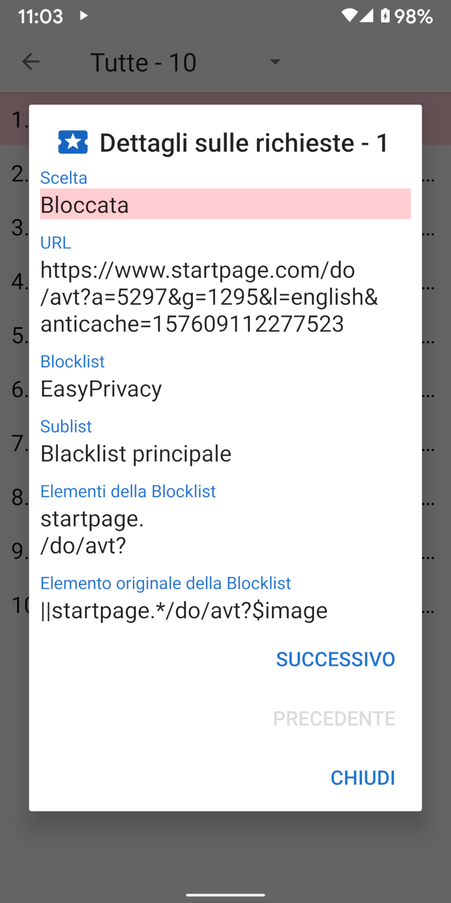

Quando viene caricata un URL, generalmente effettua un certo numero di richieste di risorse per CCS, JavaScript, immagini, e altri files. I dettagli relativi a queste richieste possono essere visualizzati nella scheda delle Richieste. Il menù a cassetto ha un collegamento alla scheda delle richieste e mostra quante sono state bloccate. Se si tocca una delle richieste in elenco vengono mostrati i dettagli sui motivi per cui è stata permessa o bloccata.
Clear Browser include quattro liste di blocco comuni basate sulla Sintassi di Adblock: EasyList, EasyPrivacy, Fanboy’s Annoyance List, e Fanboy’s Social Blocking List. Queste blocklist sono processate da Clear Browser nelle seguenti 22 liste secondarie, che verificano le richieste di risorse nell'ordine elencato.
Le liste iniziali servono per la verifica della parte iniziale delle URL. Le liste iniziali servono per la verifica della parte finale delle URL. Le liste dei domini servono per la verifica di certi domini. Le liste di terze parti si applicano solo se il dominio di root della richiesta è diverso dal dominio di root della URL principale. Le liste per le espressioni regolari seguono la sintassi delle espressioni regolari. Ogni oggetto delle liste secondarie ha uno o più elementi. Nel caso delle liste secondarie dei domini, la richiesta di risorse è verificata solo se il primo elemento combacia con il dominio della URL principale.
A causa delle limitazioni della WebView di Android, e per velocizzare il processo delle richiesta, Clear Browser implementa una versione semplificata della sintassi di Adblock. Questo approccio potrebbe a volte portare ad avere falsi positivi, nel caso in cui le risorse siano bloccate o permesse in modi che non erano previsti dall'elemento originale. Una descrizione più dettagliata su come sono processati gli elementi delle liste di blocco è disponibile su stoutner.com.
Clear Browser ha tre liste di blocco aggiuntive.
UltraList e UltraPrivacy
bloccano gli annunci e i sistemi di tracciamento che EasyList e EasyPrivacy non bloccano. La terza blocca tutte le richieste di terze parti.
Una richiesta è considerata di terze parti solo se il dominio di base della richiesta è diverso dal dominio di base della URL.
Ad esempio se www.website.com carica un'immagine da images.website.com,
questa non è bloccata come richiesta di terze parti, perchè il dominio di base è lo stesso: website.com.
Il blocco di tutte le richieste di terze parti aumenta la privacy, ma questa lista di blocco è disabilitata di default perchè impedisce la corretta visualizzazione di un gran numero di siti web.